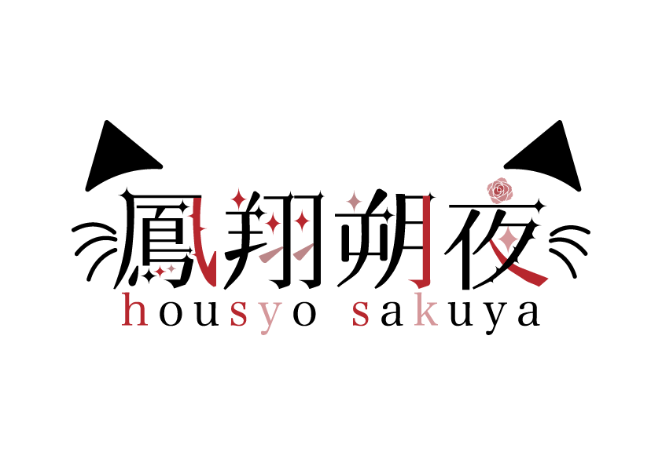
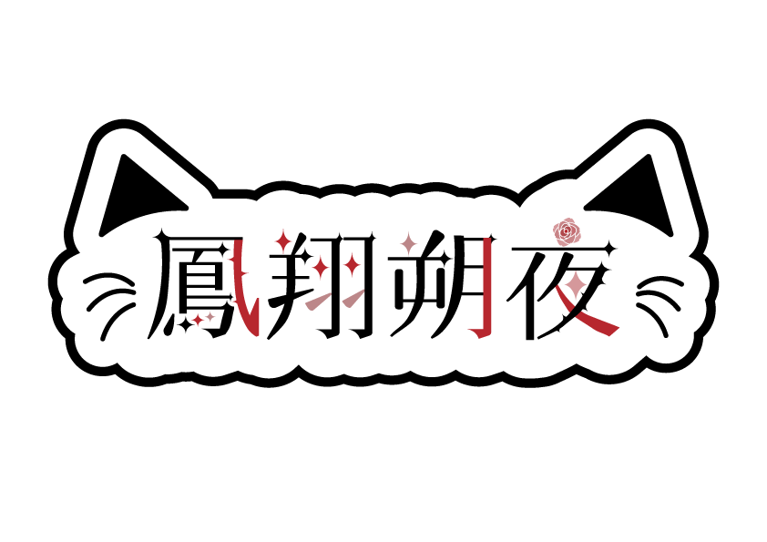
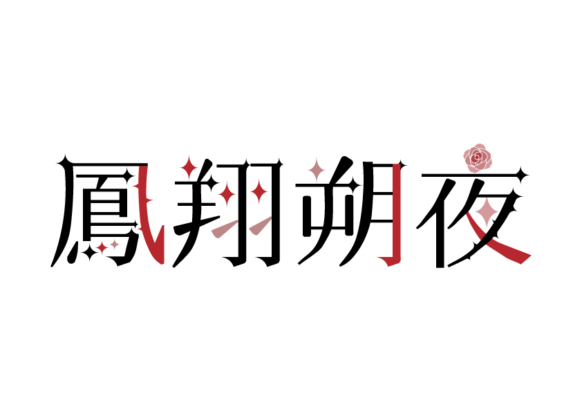
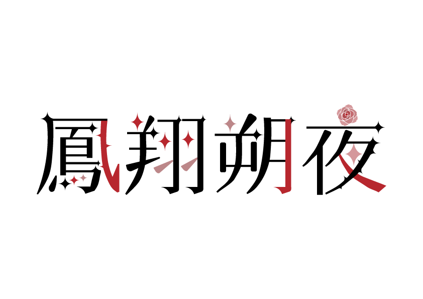
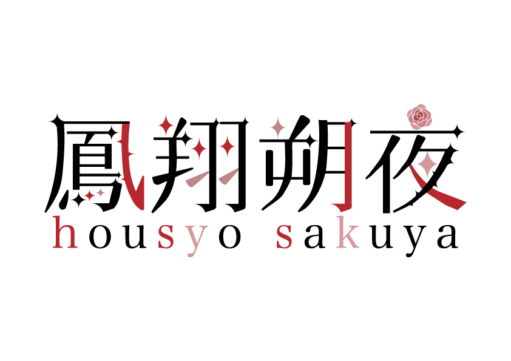
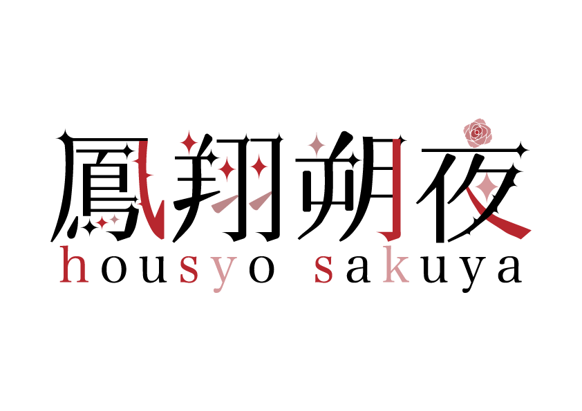

01 / WORK DETAIL
← logoの一覧に戻る
鳳翔朔夜
立ち絵がゴシックな雰囲気だったのでエレガントさが出るようにしました。色は立ち絵を参考にさせていただきました。頂いたイメージにバラがあったので薔薇の花や棘を取り入れました。
活動者本人のX ↗← logoの一覧に戻る

立ち絵がゴシックな雰囲気だったのでエレガントさが出るようにしました。色は立ち絵を参考にさせていただきました。頂いたイメージにバラがあったので薔薇の花や棘を取り入れました。
活動者本人のX ↗06 VARIATIONS




